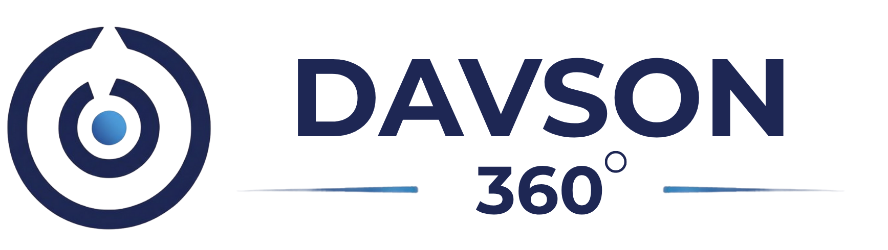

📁 Dossier // Archive-72
INDEX: ARCH-NEP · VOL. 01 / 10
404 Found — The Untold Life Dossier
VJ
VIJAYESH SAINJU · विजयेश
FROM HIS OWN SITE · MOMOCHA.COM
★ Self-Taught ★
since 1999
◉ Vijayesh Sainju
b. 12 Dec 1972 · Nepal → Jersey City, USA
Nepal → Jersey City → Dubai → Bangkok → Kathmandu
Self-Taught Programmer · Founder · CTO · Educator
WhatsApp identity: "Vj Nepal" · +977 981-832-9394
[04:00:12 AM NPT] > gcc -Wall -O2 life_journey.c -o legacy
[OK] Compiling memory buffers: 1972..2026
> Initializing Kathmandu Valley dial-up modem daemon…
"Before the cloud, there was pure curiosity and dial-up tones echoing through the midnight quiet of Nepal."— dossier preamble
Start the walkthrough →10 chapters · 54 years · tap to open file
1972 — Roots & First Domain
Ghar Panna — The Home Page
Ch.02 // Nepal → America // school, migration, first login
sainju.com — netscape 4.0
LOCATION: http://www.sainju.com/ · archived 27 Nov 2004
Artifact: "A Sainju Family Website" — Vijayesh Sainju & Brenda Perez Sainju, 2004. His first home on the web.
1972Born 12 December, Nepal. Bal Krishna Sainju & Shyamu Sainju.
1980–1996Budhanilkantha School, Kathmandu. Batch 10 · roll #120.
1996–2000Leaves Nepal for the United States. Concord University, Athens, West Virginia.
~1999First jobs in New York: "Web Tester" at Waterhouse Securities. Learns the web from the inside.
1999momocha.com registered — his first domain. Named after the Newari corn beer. A web design business is born.
Newari rootsBanepa → Kathmandu → NYCfirst domain: 1999
2000–2016 — Momocha Era
Momocha Web Designers
Ch.03 // freelance // "$400 websites" // jersey city
momocha.com — web designers
LOCATION: http://momocha.com/ · archived 18 Dec 2014
His own words, 2014: "Affordable but Professional — freelance web designer with 18 years of experience… Here is me smiling."
The offer, 2000
$400 / $650 / $900 website packages.
$200 for doctors & lawyers (his mom's profession influence).
"I need customers. You need great prices. It's a perfect match."
The client list
Kathmandu Inn (London) · unioncity360 · jerseycity360 · Prosurge Tools · Sorbetto · Guru HR · bambibaby · BusinessDost.
NYC · Jersey City · Hoboken · Union City · Bayonne · Newark.
GOLDEN WEB AWARD · momocha.com
"Why should I ask a big web design company about my website — when my 17-year-old nephew can do it?"— VJ, momocha.com (2002–2014)
"Most of my clients are friends now… Try calling a big web design company about your printer problems."— VJ, 2014
2009–2019 — Corporate Years
The Ladder & The Crashes
Ch.04 // banks // insurers // retailers // two bankruptcies
ID · Bank of America
2010–2011 · VBA, Access, Excel, SQL, .NET — learns enterprise scale.
ID · Liberty Mutual
2012–2014 · insurance IT, process automation.
ID · J.Crew
2015–2016 · System Programmer / Business Analyst, retail systems.
ID · Cushman & Wakefield
2016–2019 · IT Manager, East Rutherford NJ. The highest rung.
⚠ Final decree — twice
2018 — Chapter 13 filed (D.N.J.). Plan dismissed 2019.
2019 — Chapter 13 filed again. Dismissed 2020.
And through both: kept the freelance clients, kept coding at 4 AM, kept teaching. The work never stopped.
Still building · 2018–2020
2017 — Open My Network
CTO — Points, Badges, Friends
Ch.05 // learn. engage. empower. prepare.
The leap into social tech
Co-founds Open My Network (NYC) — a gamified social network for high-school students: the LEEP 30-week program, points, badges, leaderboards.
Role: Chief Technology Officer. "Registered vendor of the NYC DOE" (per site). 10K+ students claimed.
CTO title #1gamification since 2017K-12 before ChimpVine
"Occasionally guilty of turning serious ideas into games."— his LinkedIn, to this day
2021–2023 — The AI Wave
From Freelancer to CEO
Ch.06 // danson solutions // chimpvine
Danson Training — Sep 2021
First webinar: "Will AI take away human jobs?" Covered by ICT Frame. A subsidiary of Danson Solution is announced.
Danson Solutions — 2023
Rises to CEO. Hattisar, Kathmandu delivery arm. Training, marketing, AI for companies.
chimpvine.com — live
https://www.chimpvine.com/ · screenshot Sep 2026
ChimpVine — gamified AI learning for K-12. Launched 23 Mar 2023 (Business 360, The Himalayan Times, Techmandu).
Business 360"ChimpVine — a product of Danson Solutions, parent IT company founded in 2020."
The Himalayan TimesChimpVine launch coverage — gamified learning, Kathmandu.
The Annapurna ExpressExecutives quoted: Sashya Paudel (Exec Dir), Shristi Shrestha (Sales Head).
Techmandu"$10/month — 50% off the $20 list price." K-12, AI quizzes, badges.
2024–2026 — Global Footprint
One Phone Number, Five Countries
Ch.07 // entities // jersey city · kathmandu · dubai
Danson Solutions LLC
CEO · Jersey CityChimpVine
K-12 AI Learning
Davson360
AI Education · DubaiDanson Nepal
Hattisar, Kathmandusainju.com
since 1999 · family archiveMomocha
the original · 2000–2016
dansonsolutions.com — live
https://dansonsolutions.com/ · screenshot Sep 2026
Parent company today: AI training, automation, digital solutions.
NepalUSAUAEThailandCanada
shared line: +1 201-899-0314
2026 — Teacher Era
The Mentor Phase
Ch.08 // MoUs // ministries // classrooms
AI4PEN × Rotary Club of Yala
Teacher-training at Kitini Secondary School — 25 teachers, 10 weeks. Powered by Danson.
Ace Institute MoU
Signed in Kathmandu, 3 Jun 2026 — guest lectures, internships, placements for students.
Government & NGOs
AI training for the Ministry of Forests / REDD+ sector; sessions with IUCN; Global College of Management.
Asia CEO Community
Fen-i Space Bangkok (Jan 2026), PACE Forward Thailand, SHIFT360 leadership labs, Skills for Change Toronto.
[2026] > mission --status
[OK] "AI will transform roles, not eliminate people."
> students_reached = "400+ (self-reported)" · teachers = "25+"
His Words — 25 Years of Aphorisms
In His Own Hand
Ch.09 // forums // essays // linkedin // verbatim
"I believe everyone I know by name and face is a friend."— sainju.com, 2002
"I am a programmer."— sainju.com profile, 2002
"Here is me smiling."— momocha.com contact page, caption under his own photo
"Contet is King. Traffic is Queen." (sic — typo kept, as written in 2016)— momocha.com blog
"AI will transform roles, not eliminate people."— Danson, 2025
"Occasionally guilty of turning serious ideas into games."— LinkedIn, present
Doc_Ref: Epilogue_Terminal_2026 [Declassified]
★ Still Building ★
1972 — 2026+
54 years old. Five countries.
One website at a time.
> From dial-up modems in the Kathmandu valley to global cloud-native systems,
the work remains unfinished. The next terminal is always opening.
▷ Telex Dispatch — ONLINE
Direct line to the archive's subject: +977 981-832-9394 ("Vj Nepal" on WhatsApp).
Transmit telegram / message →opens WhatsApp · wa.me/9779818329394
↺ Restart walkthrough
Archive verification · sealed
Official records & walkthrough docket of Vijayesh Sainju.
Kathmandu · New York · Dubai.